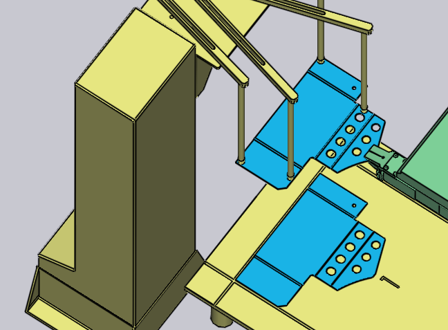

ディスペンサーからのピックアップ
スモールパーツの取り扱いには、TecZone Bendでは_ジョーグリッパー_とも呼ばれる_機械式グリッパー_を使用します。パーツが約 A4 サイズより小さい場合、TecZone Bendは自動的にジョーグリッパー使用に切り替わります。このグリッパーは、ディスペンシングステーション（_ブランクディスペンサー_とも呼ばれる）からしかパーツをピックアップできません。これらのパラメーターはこのピックアッププロセスに影響します：
-
マシンセル内のディスペンサーの位置と向き。
-
ディスペンサー上のパーツの向き。
-
パーツ上のジョーグリッパーの位置と向き。
これらすべての設定の編集に使用するパネルは以下に表示されています - それはすべて上下ナビゲーションリンクで論理的な順序に相互に接続しています：

上の画像が示すように、シミュレーションのさまざまなオブジェクトをクリックするだけで、これらのパネルに簡単にアクセスできます。
-
ディスペンサー パネルを開くには、ディスペンサーをクリックします。
-
ディスペンサー上のパーツの回転方向を編集するには、ディスペンサー上のブランクをクリックします（まず、ナビゲーターの P 列をクリックして現在のステージを ピックアップ に設定してください）。
-
グリッパー のパーツ受取り位置を編集するには、グリッパーをクリックします。
ディスペンサーパネル
ディスペンサーをクリックして、ディスペンサー パネルを開きます。TecZone Bendは、パーツをディスペンサーの_アライメントコーナー_に配置し、サクショングリッパアームをパーツのコーナーに位置決めします。このパネルで、アーム設定やディスペンサー位置を編集します。

-
位置、角度 および 上昇 設定を使用して、ディスペンサーの位置と回転方向を設定し、実際のセル内の位置に合わせます。
ピックアップパネル
ピックアップ パネルで、ディスペンサー上のパーツの回転方向を設定します。
パーツを回転/反転し、パーツを保持するための適切な面を自動的に選択します（グリッパーは常に一方向からしかアプローチできないため）。ディスペンサー上のブランクをクリックすると、このパネルを表示できます。

-
ワークを回転 ボタンで、パーツを 90 度回転します。上の画像ではパーツは理想的な回転方向ではありません。数回回転操作を行った後の良い結果：
 -
ブランクが反対方向に反転している場合、部品反転 ボタンを押してモデルを反転します。


グリッパーパネル
グリッパー パネルで、パーツ上グリッパー位置を調整したり、別のグリッパーに切り替えたり、ピックアップ時のグリッパー回転/スライド軸を設定します。

-
名称 リストで、このマシンで利用可能なジョーグリッパーから新しいグリッパーを選択します。名前にマウスを重ねるとサムネイルが表示されます：

-
位置 および 角度 設定で、グリップ面の中心点にグリッパーの位置と回転方向を調整します。センターは上の画像の二重円です。位置/角度調整後：

-
ジョーを反転する と 移動 ボタンで、グリッパーのネックとスライド設定を変更します。適用後の結果：

-
真空グリップを使用する。 ボタンで、パーツをサクショングリッパー使用に切り替えます。これは完全再計算で、ディスペンサーは使われずパレットからのピックアップに変わります。サクショングリッパーに適合するよう、曲げ順・つかみ換え・収納パターンが再計算されます。